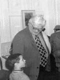

Валентин Дмитриевич БЕРЕСТОВ
``Уходят, уходят, уходят, уходят мои друзья'' - пел когда-то Александр Галич. Уходят, уходят из жизни люди, которые были друзьями каждому из нас - с первых проблесков сознания, с первой книжки... Слово ``культура'' в нашей повседневности затерто и затрепано донельзя, но как иначе, чем ``ушел целый пласт культуры'', скажешь об уходе Валентина Берестова - чудесного поэта, замечательного рассказчика, веселого, озорного человека, и в 70 лет сохранявшего в себе ребенка? Валентин Дмитриевич общался с Анной Ахматовой, Корнеем Чуковским, а мы общались с ним - значит, тоже чуть-чуть прикоснулись к протянувшейся сквозь толщу лет ниточке живой, настоящей культуры. Мы были последней детской аудиторией Берестова. И теперь к горечи потери, к безжалостному ``никогда'' примешивается теплое и доброе чувство: успели, увидели...
Встреча состоялась в феврале 1998 года в Детско-юношеском центре ``Пресня''. Запись встречи сделали ребята из объединения ``Журналистика и риторика''.
 Эти фотографии были сделаны в 1992 году на открытии выставки рисунков Татьяны Александровой в тогда еще Доме пионеров Красной Пресни. Валентин Дмитриевич организовал эту выставку и потом целую неделю сам водил по ней школьников.|
В Российской государственной детской библиотеке работает Литературный центр В.Д. Берестова. Руководитель Центра - Кузьменкова Елена Михайловна. Тел. 230-0179, факс 230-0649. Звоните и приезжайте! |
Если Вы знаете еще какой-нибудь сервер с произведениями Валентина Дмитриевича, напишите нам!